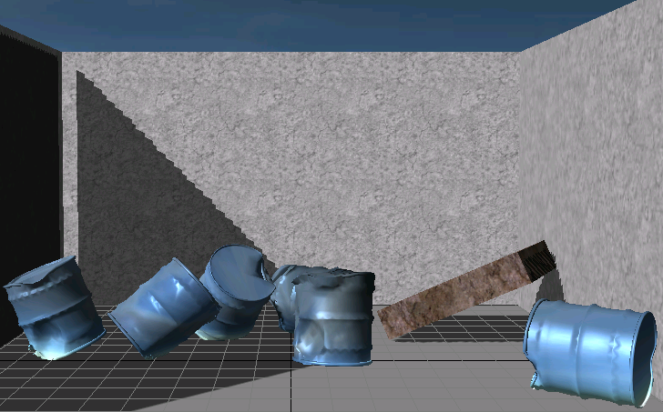

Cloth Metal is a cloth mode which allows cloth to be used to simulate plastic deformation. For example dents in barrels, car bodywork or metal doors can be displayed when there is a large impact on the surface.
Cloth metal is created in a very similar way to other cloth types, first a cloth mesh is created (NxClothMesh) and instances of this cloth mesh are used in the form of NxCloths.
Then to enable the feature a rigid body should be attached to the cloth. The cloth acts as a deformable surface for the rigid body. The cloth automatically becomes rigid when the body is attached. The rigid body is used for simulation until an object hits the cloth with a sufficiently large impulse to cause deformation, at this point the cloth deforms. Following the impact the object is simulated again using the rigid body. Collision is made against cloth vertices, so objects smaller than the distance between cloth vertices might not interact fully with the metal cloth.
To attach the rigid body to the cloth use:
void NxCloth::attachToCore (NxActor *actor, NxReal impulseThreshold, NxReal penetrationDepth=0.0f, NxReal maxDeformationDistance = 0.0f);